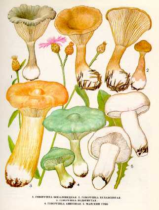

1. ГОВОРУШКА БОКАЛОВИДНАЯ.
Широко распространен в нашей стране в хвойных, смешанных и широколиственных лесах, на подстилке и гнилой древесине. Встречается с августа по октябрь.
Шляпка 3—8 см в диаметре,бокаловидная или чашковидная, серовато-коричневатая, блестящая, шелковистая, с завернутым краем. Мякоть тонкая, водянистая, одного цвета со шляпкой, вкус и запах приятные.
Пластинки редкие, светло-бурые или серовато-коричневые, светлее шляпки, нисходящие по ножке. Споровый порошок белый. Споры эллипсоидные. Ножка 3—10 см длины, 0,5—0,6 см толщины, одного цвета со шляпкой или немного светлее, полая, у основания пушистая.
Малоизвестный съедобный гриб. Употребляется свежим, соленым и маринованным.
2. ГОВОРУШКА БУЛАВОНОГАЯ.
Растет на лесной подстилке в хвойных, смешанных и широколиственных лесах с примесью березы. Встречается одиночно или
небольшими группами с июля по октябрь.
Шляпка 4—7 см в диаметре, сначала выпуклая, затем плоская, темно-серая, гладкая. Мякоть в середине шляпки тол-
стая, по краям тонкая, сначала светло-буроватая, затем белая, восковидная, с нежным вкусом и приятным запахом.
Пластинки нисходящие по ножке, довольно редкие, кремовые, широкие. Споровый порошок белый. Споры эллипсоидные.
Ножка 4—8 см длины, до
Малоизвестный условно съедобный гриб. Употребляется свежим, соленым и маринованным.
3. ГОВОРУШКА ПОДОГНУТАЯ, РЫЖАЯ.
Встречается в
широколиственных и хвойных лесах, иногда большими группами, с августа по
октябрь. Шляпка до
Пластинки нисходящие по
ножке, белые или кремоватые, частые. Споровый порошок белый. Споры яйцевидные,
бесцветные. Ножка до
Малоизвестный съедобный гриб. В пищу употребляются шляпки молодых грибов в свежем виде.
4. ГОВОРУШКА АНИСОВАЯ. ГОВОРУШКА ДУШИСТАЯ.
Растет в лиственных и хвойных лесах. Встречается редко, одиночно и небольшими группами с августа по октябрь.
Шляпка небольшая — 5—9 см в диаметре, серовато-зеленая, вцентре более яркая, сначала выпуклая, с завернутым краем, затем распростертая, в центре вогнутая, иногда с бугорком.
Мякоть грязно-белая или бледно-зеленая, водянистая, с запахом аниса или укропа, вкус приятный.
Пластинки
нисходящие по ножке, частые, бледно-желтовато-зеленоватые. Споровый порошок белый. Споры эллипсоидные. Ножка до
Съедобный гриб четвертой категории. Пригоден для засола и маринования вместе с другими грибами, а также употребляется в свежем виде.
5. МАЙСКИЙ ГРИБ. МАЙКА. ГЕОРГИЕВ ГРИБ
Растет в изреженных лиственных лесах, на травянистых местах, а также на выгонах, пастбищах, близ населенных пунктов в мае - июне.
Шляпка до
Пластинки беловатые, частые, выемчатые или приросшие зубцом. Споровый порошок кремовый.
Ножка до
Съедобен, четвертой категории. Употребляется свежим без предварительного отваривания.
Предупреждение. Молодой Георгиев гриб похож на энтолому ядовитую. Форма шляпки и окраска почти одинаковые. Отличить их можно по пластинкам: у энтоломы они алые, а у геор-гиевого гриба белые. Георгиев гриб появляется в мае, а энтолома - в июле